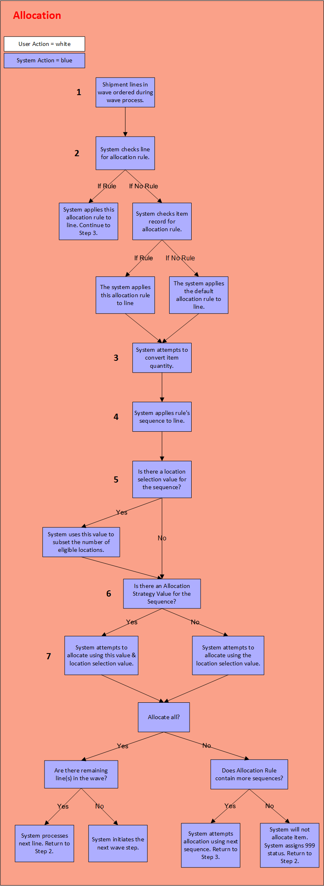

** Process Flows **
This process diagram illustrates how the system creates allocation requests for shipment lines.

The allocation process creates allocation requests to accommodate shipment lines. Allocation is part of the wave cycle.
The priority order is defined by the system in the following manner: by shipment priority, shipment scheduled ship date, shipment internal shipment number, shipment line item, and shipment line total quantity descending.
The system will attempt to allocate product for all shipment lines included in the wave.
The system determines which Allocation Rule it will apply to the shipment line record. It searches for an allocation rule in the following order:
If the allocation rule is defined on the Shipment Line record, the system will assign this allocation rule to the record.
If the allocation rule is NOT defined on the Shipment Line record, the system will reference the item record (requested on the shipment line). If an allocation rule is defined on the item record, the system will assign this rule to the line.
Conversions allow you to allocate product in the most efficient manner. For example, if the requested quantity is 64 and there are 10 eaches in a case, the system would convert the amount to 6 cases and 4 eaches. If a higher Unit of Measure value existed, the system would attempt to convert the case quantity to that value.
The system determines which Item Unit of Measure record it will use to convert the requested quantity.
If the item is associated with an Item Unit of Measure record, the system will use this record to perform conversions.
If the item is NOT associated with an Item Unit of Measure record, the system will reference the value in the Item Class Field on the shipment line record. If this value is associated with an item unit of measure record, the system will use this record to perform conversions.
If the shipment line does NOT have an item class specified, the system will reference the value in the Item Class Field on the item record. If this value is associated with an item unit of measure record, the system will use this record to perform conversions.
An allocation rule has at least one sequence record.
The sequence record identifies how product can be allocated, based on allocation strategies and allocation location selection values. A sequence record can be defined by both a strategy and a location selection; it must include at least one of these values. You cannot define a sequence record if both values are left blank.
Locations are subset based on user defined allocation location selection records and by internal system criteria.
The allocation location selection values are defined on the Allocation Location Selection Window. This is a filter criteria window that allows you to manage allocation locations based on your specific needs, such as movement class, lot ID, etc.
|
Location Warehouse |
= |
Shipment Line Warehouse |
|
Location Item |
= |
Shipment Line Item |
|
Location Company |
= |
Shipment Line Company |
|
Location Lot |
= |
Shipment Line Lot |
|
Location Class |
= |
"Inventory" |
|
Location Status |
= |
Not equal to "Frozen" |
|
Available Quantity |
= |
Greater than 0 |
If an Allocation Location Selection Value is defined on the sequence, the system will use it to narrow the locations considered for allocation. The allocation can only occur in those locations that meet the location selection's criteria and the internal system criteria.
If an Allocation Strategy Value is defined on the sequence, the system will use it to determine which location(s) it should allocate from.
All allocation strategies are predefined. Allocation strategies sort the locations based on common used directives, such as clearing out locations, moving product based on expiration date, etc. Access strategy list.
If the sequence included an Allocation Location Selection Value, the strategy is applied only to those locations subset during Step 5. After the strategy is applied, the system will reference the Order By Tab on the allocation location selection record. If this tab contains an order by value, that value is applied to the locations after the strategy is applied. From a practical standpoint, this tab is used primarily to break any ties generated by the strategy.
If the sequence did NOT include an Allocation Location Selection Value, the system will apply this strategy to all locations that meet the criteria defined at Step 5..
If Step 6 yields a sorted list of locations, the system will attempt to allocate product. To accomplish this, it completes the following processes:
If the default dimension/quantity values for an item were overridden when it was putaway, the system will honor the override dimensions/quantity during allocation. For example, if a case of Item XYZ usually contains 10 units, but an 8 unit case was putaway to Location 456, the system will reconvert the item's quantity using the override values (see Step 3). This dimension/quantity conversion applies to this item/location only.
If the requested UM is not defined on the location record, the system cannot allocate it from this location. The UM is selected on the Allocation Quantity UM List Tab on the Location Window. Note: if no values are selected on this tab, all UMs are considered valid.
If the detail includes multiple units of measure, the system will attempt to allocate all units of measure at each location. In other words, it does not attempt to allocate one unit of measure at a time. This minimizes processing time.
If you would prefer to allocate one unit of measure at a time (see bullet, above), the allocation rule detail must include a location strategy record that defines the UM value.
If the system can allocate the entire request quantity, it will write a shipment allocation request based on values defined on the shipment line record. This record is stored in a database table until either container creation or work creation begins. After it allocates product for this line, the system will attempt to allocate product from the remaining lines in the wave. It processes through all lines based on their priority order (Step 1).
Please note that the system can select multiple allocation locations for one allocation request. The system will select multiple locations if the quantity cannot be allocated from just one location.
If the system can allocate part of the request quantity, it will write a shipment allocation request for the quantity that it can fulfill. It will attempt to allocate the remaining quantity using the next sequence record. See Step B, below.
If Step 7A cannot allocate product using the first sequence, it will check the allocation rule for additional sequences.
If this allocation rule includes additional sequence records, the system will attempt to apply the next one to this request. The sequence records are processed in order, based on their sequence number: the lower the number, the sooner the sequence record is used.
If this allocation rule does not include additional sequence records, the system cannot allocate product for this request.